Plots a single indicator as a line of dots, and optionally highlights selected units and statistics.
This is intended for showing the relative position of units to other units, rather than as a statistical
plot. For the latter, use plot_dist().
Usage
plot_dot(
coin,
dset,
iCode,
Level = NULL,
...,
usel = NULL,
marker_type = "circle",
add_stat = NULL,
stat_label = NULL,
show_ticks = TRUE,
plabel = NULL,
usel_label = TRUE,
vert_adjust = 0.5
)Arguments
- coin
The coin
- dset
The name of the data set to apply the function to, which should be accessible in
.$Data.- iCode
Code of indicator or aggregate found in
dset. Required to be of length 1.- Level
The level in the hierarchy to extract data from. See
get_data().- ...
Further arguments to pass to
get_data(), other than those explicitly specified here.- usel
A subset of units to highlight.
- marker_type
The type of marker, either
"circle"(default) or"cross", or a marker number to pass to ggplot2 (0-25).- add_stat
A statistic to overlay, either
"mean","median"or else a specified value.- stat_label
An optional string to use as label at the point specified by
add_stat.- show_ticks
Set
FALSEto remove axis ticks.- plabel
Controls the labelling of the indicator. If
NULL(default), returns the indicator code. Otherwise if"iName", returns only indicator name, if"iName+unit", returns indicator name plus unit (if found), if"unit"returns only unit (if found), otherwise if"none", displays no text. Finally, any other string can be passed, so e.g."My indicator"will display this on the axis.- usel_label
If
TRUE(default) also labels selected units with their unit codes.FALSEto disable.- vert_adjust
Adjusts the vertical height of text labels and stat lines, which matters depending on plot size. Takes a value between 0 to 2 (higher will probably remove the label from the axis space).
Details
This function uses ggplot2 to generate plots, so the plot can be further manipulated using ggplot2 commands.
See vignette("visualisation) for more details on plotting.
This function replaces the now-defunct plotIndDot() from COINr < v1.0.
Examples
# build example coin
coin <- build_example_coin(up_to = "new_coin")
#> iData checked and OK.
#> iMeta checked and OK.
#> Written data set to .$Data$Raw
# dot plot of LPI, highlighting two countries and with median shown
plot_dot(coin, dset = "Raw", iCode = "LPI", usel = c("JPN", "ESP"),
add_stat = "median", stat_label = "Median", plabel = "iName+unit")
